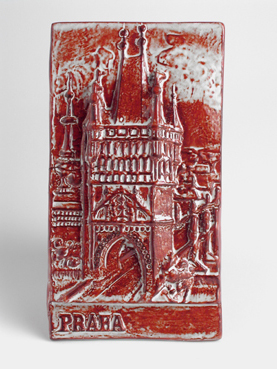
244.Pragplakette
Sortiment
Kleine Keramikstücke als Geschenk, Detail oder dekorativer Akzent.

244.Pragplakette
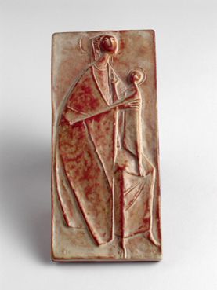
139.Madonnaplakette
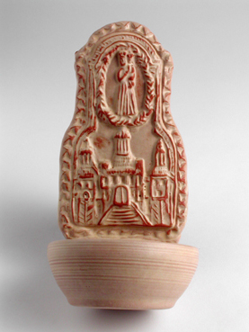
112.Weihkessel
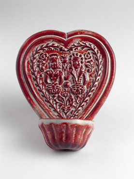
112.Weihkessel
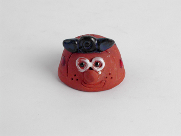
243.Blumentopfverziehrung - Marienkaefer
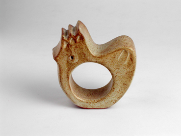
229.Osterhuhn (Eierstaender)
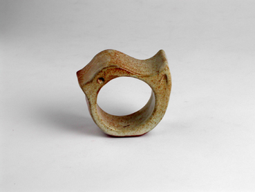
228.Osterkuecken (Eierstaender)
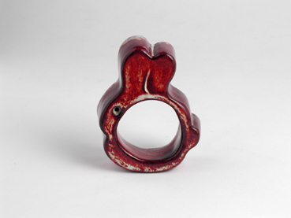
230.Osterhase (Eierstaender)
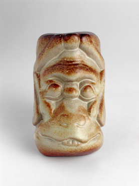
116.Indische Wandmasken 4 zweite
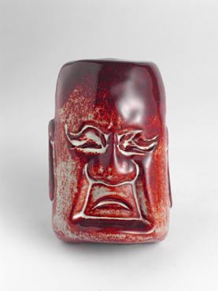
116.Indische Wandmasken 4 zweite
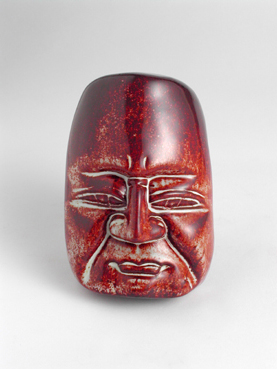
116.Indische Wandmasken 4 zweite
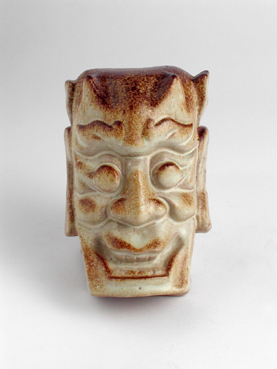
116.Indische Wandmasken 4 zweite
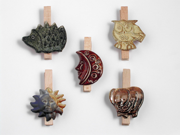
255.Kluppe, verschiedenen Motiv
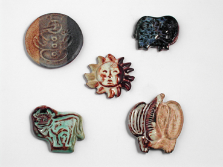
114.Magnet, verschiedenen Motiv
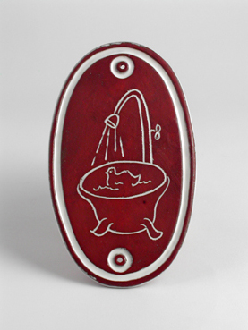
189.Namensschild fuers Bad
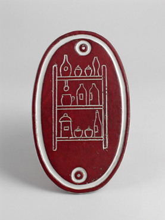
189.Namensschild fuer die Speisekammer
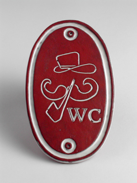
189.Namensschild - Herren WC
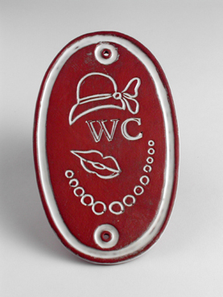
189.Namensschild - Damen WC
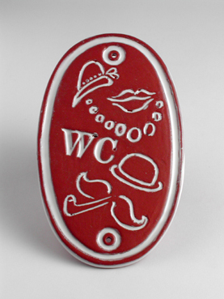
189.Namensschild - Damen und Herren WC
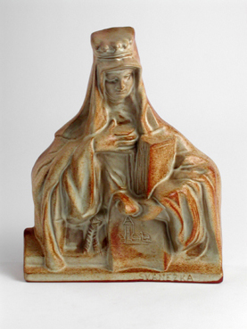
241.Tschechisches Aenchen
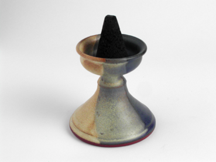
257.Staender raucherkerzenschale
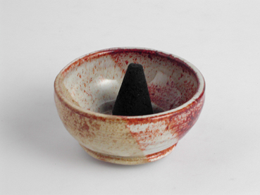
124.Raucherkerzenschale klein
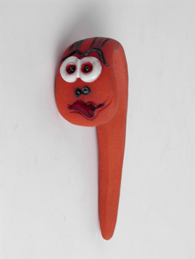
240.Regenwurm (Lockerer fuer Blumentoepfe)
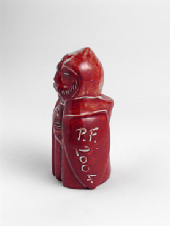
138.Bauer PF (Neujahresgeschenk)
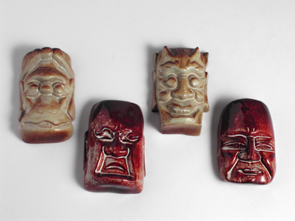
116.Indische Wandmasken - 4 Stk
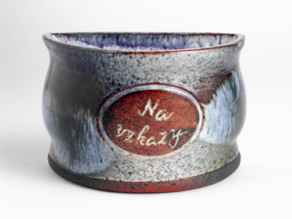
231.Nachrichtenstaender
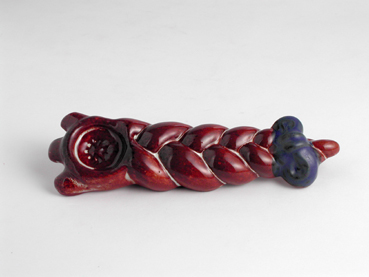
181.Kerzenstaender - geflochten

111.Milchkuh
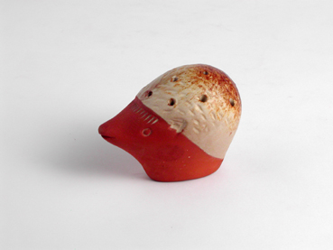
134.Zahnstocherbehaelter - Igel
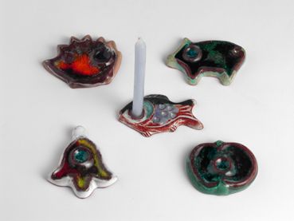
180.Weihnachtskerzenstaender